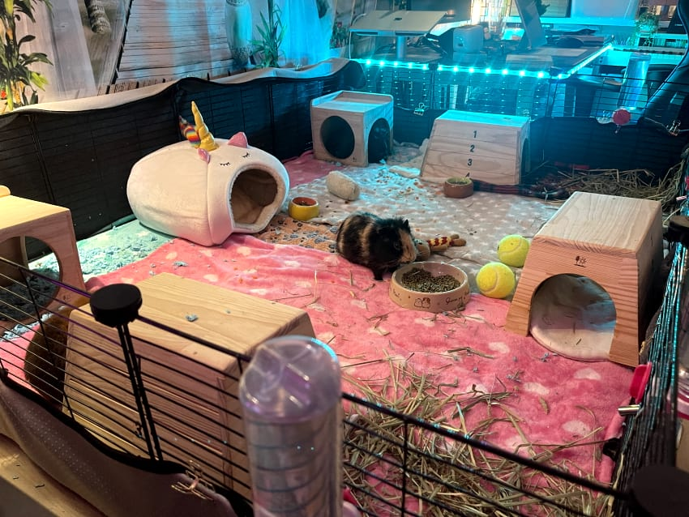

Forget the cramped pet store cages! At PurrPets, we believe every pair of piggies deserves a spacious "C&C" cage that allows them to run, popcorn, and explore.

| Number of Piggies | Minimum Space | PurrPets Preferred |
|---|---|---|
| 2 Guinea Pigs | 7.5 Square Feet | 10.5 Square Feet (2x4 C&C Grid) |
| 3 Guinea Pigs | 10.5 Square Feet | 13 Square Feet (2x5 C&C Grid) |
| 4 Guinea Pigs | 13 Square Feet | 16+ Square Feet (2x6 C&C Grid) |
C&C stands for Cubes (wire storage grids) and Coroplast (corrugated plastic). This DIY method is cheaper than store-bought cages and provides 3-4 times more space!
Guinea Pigs need a clear path to run laps. When designing your cage, keep the center area open. This allows them to reach top speeds during their morning "Zoomies" and perform their famous "Popcorn" jumps without hitting any furniture!